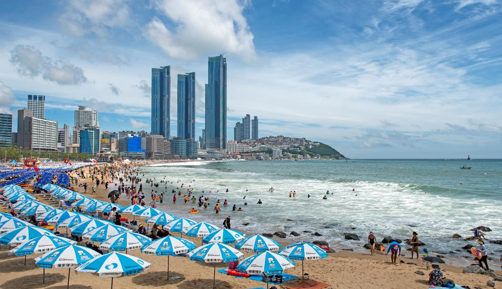
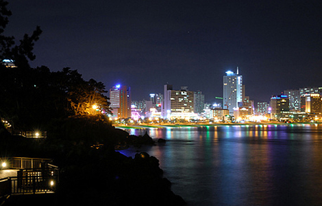
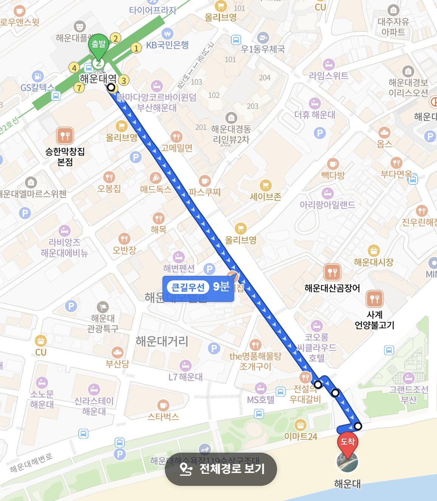
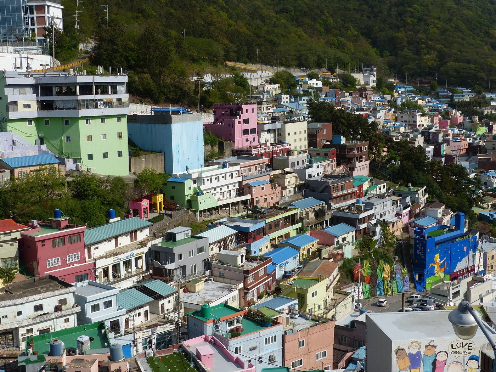
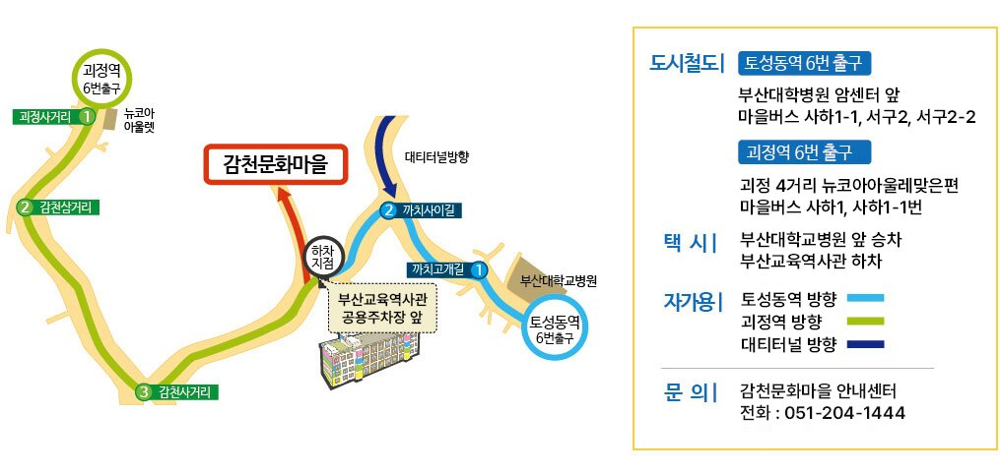
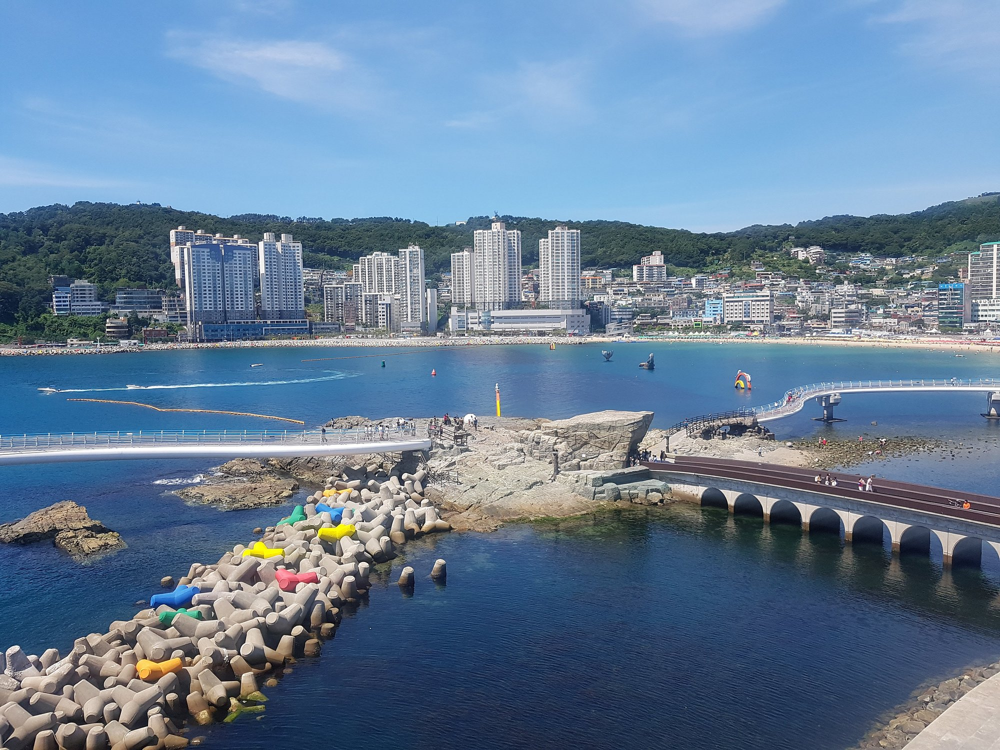

백사장의 길이가 1.5km, 폭 70~90m, 면적 120,000㎡인 부산의 대표적인 해수욕장이다. 주변에 오락시설과 놀거리가 많아 해마다 천만명이 넘는 피서객이 찾아오고 있다. 또한, 매년 해수욕장 개장과 더불어 각종 행사와 축제가 개최되어 해운대를 찾는 관광객들은 풍성한 볼거리를 즐길 수 있다. 올해 2026년 5월에도 '부산 해운대 모래축제'가 개최되어 다양한 모래 조각들이 전시되었다. 또한, 해운대는 야경 또한 일품이라고 알려져있다. 해수욕장에 경관조명을 설치하여 웨스턴조선호텔에서 한국콘도 앞에 이르는 약 1.6km를 비추고 있다. 해운대 해수욕장의 경관조명은 광장과 보행로, 주변 수목 등에 다양하게 조성되어 해변의 낭만과 아름다운 자연경관, 신비로운 조명이 어우러진 멋진 바다 분위기를 연출한다.

해운대 해수욕장은 부산에서 지하철 2호선을 타고 해운대역에서 하차 후, 도보로 10분 정도 걸어가면 도착할 수 있다.

감천 문화마을은 부산 감천동에 위치한 마을이다. 이 마을은 1950년대 6.25 피난민의 힘겨운 삶의 터전으로 시작되어 현재에 이르기까지 민족현대사의 한 단면과 흔적인 부산의 역사를 그대로 간직하고 있는 곳이다. 산자락을 따라 질서정연하게 늘어선 계단식 집단 주거형태와 모든 길이 통하는 미로 형태의 골목길은 독특함을 자아낸다. 이런 특색과 역사적 가치를 살리기 위해 지역 예술인들과 주민들이 "마을 미술 프로젝트"를 추진하여 마을 곳곳에 각종 그림과 벽화들을 그려넣었고, 이는 감천 문화마을의 대표적인 매력이 되었다. 이를 통해 감천 문화마을은 2019년 308만여명이 방문하는 명소가 되었다.

감천 문화마을은 부산 괴정역 6번 출구 또는 토성동역 6번 출구에서 마을 버스인 사하1-1, 서구2, 서구2-2를 타면 갈 수 있다.

부산광역시 서구 암남동에 위치한 송도 스카이워크는 구름산책로라고도 불리는 곳이다. 말 그대로 산책하기 좋은 곳인데 이 곳은 다른 산책로들과는 다르게 바다 위에 산책로가 존재한다. 근처에 있는 송도 해수욕장 동편에 있는 거북섬을 육지와 잇는 다리인 산책로는 투명 강화유리로 되어있어 바다 한가운데를 걸어가는 느낌을 받을 수 있다. 바다 위를 거닐며 바닷바람을 느낄 수 있고, 송도 연안과 송도 해수욕장을 한눈에 볼 수 있어 부산의 새로운 랜드마크로 부상하고 있다. 근처에 있는 송도 케이블카 또한 부산의 유명한 관광명소 중 하나이다.